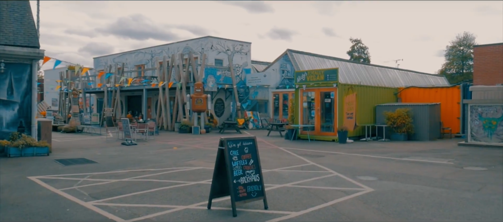

Attractions
Coventry Transport Museum

Coventry Transport Museum (formerly known as the Museum of British Road Transport) is a motor museum, located in Coventry city centre, England. It houses a collection of British-made road transport. It is located in Coventry because the city was previously the centre of the British car industry. There are more than 240 cars and commercial vehicles, 100 motorcycles, 200 bicycles
Opening times:
Mon | 10:00-17:00
Tue | 10:00-17:00
Wed | 10:00-17:00
Thu | 10:00-17:00
Fri | 10:00-17:00
Sat | 10:00-17:00
Sun | 10:00-17:00
Price: Free entry for all ages.
Coventry Cathedral

The Cathedral Church of St Michael, commonly known as Coventry Cathedral, is the seat of the Bishop of Coventry and the Diocese of Coventry, and is part of the Church of England in Coventry, West Midlands, England. The current (9th) bishop is Christopher Cocksworth and the current Dean is John Witcombe.
The city has had three cathedrals. The first was St Mary's, a monastic building, of which only a few ruins remain. The second was St Michael's, a 14th-century Gothic church later designated cathedral, which remains a ruined shell after its bombing during the Second World War. The third is the new St Michael's Cathedral, built after the destruction of the former.
Opening Times:
Mon | 10:00-17:00
Tue | 10:00-17:00
Wed | 10:00-17:00
Thu | 10:00-17:00
Fri | 10:00-17:00
Sat | 10:00-17:00
Sun | 12:00-16:00
Herbert Art Gallery & Museum

Herbert Art Gallery & Museum (also known as the Herbert) is a museum, art gallery, records archive, learning centre, media studio and creative arts facility on Jordan Well, Coventry, England. The museum is named after Sir Alfred Herbert, a Coventry industrialist and philanthropist whose gifts enabled the original building to be opened in 1960. Building began in 1939, with an interruption by the Second World War, and the Herbert opened in 1960. In 2008, it reopened after a £14 million refurbishment. The Herbert is run by Culture Coventry, a registered charity, and admission is free. It derives financial support from donations, sales at the museum shop, and hiring the buildings out. In 2010, the museum and gallery received more than 300,000 visitors, making it one of the most popular free tourist attractions in the West Midlands.
Opening times:
Mon | 10:00-16:00
Tue | 10:00-16:00
Wed | 10:00-16:00
Thu | 10:00-16:00
Fri | 10:00-16:00
Sat | 10:00-16:00
Sun | 12:00-16:00
Price: Free entry for all ages.
FarGo Village
FarGo Village is located at Far Gosford Street, opened in 2014, it was created by Ian Harrabin, of Complex Development Projects, he believes that “culture, history and art can sell Coventry and Warwickshire”. It is a creative Quarter for leisure, culture and art with different shops, restaurant and performance venue (The Box),It attracted lots of artists start their own creative artistic businesses here.
Opening times:
Mon | 10:00-18:00
Tue | 10:00-18:00
Wed | 10:00-18:00
Thu | 10:00-18:00
Fri | 10:00-18:00
Sat | 10:00-18:00
Sun | 11:00-16:00